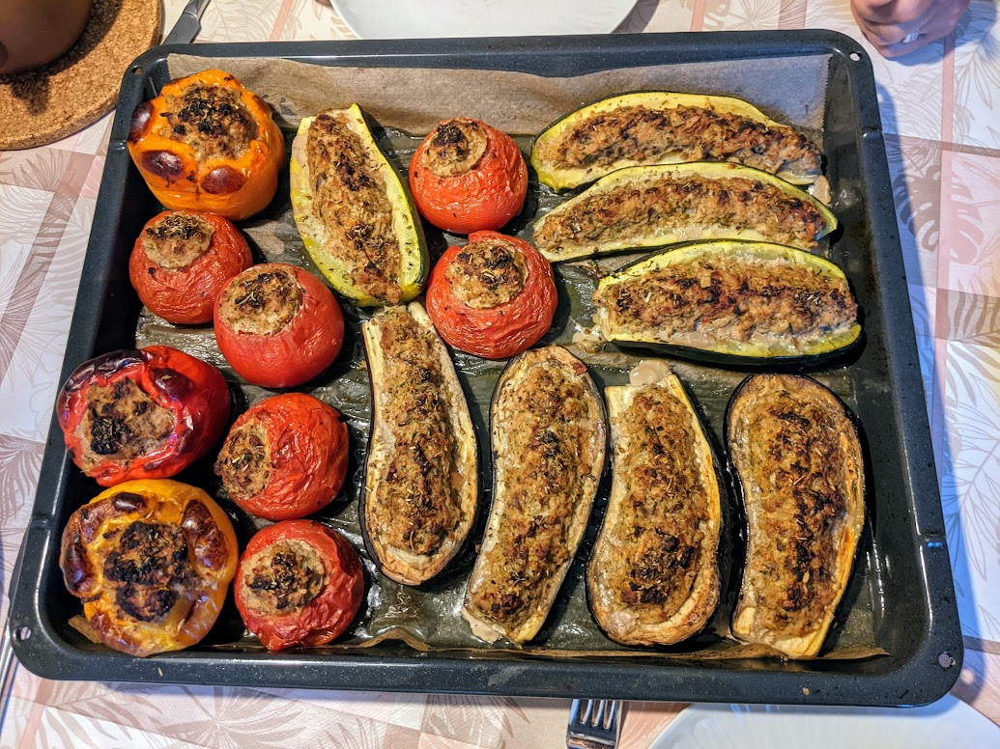

..@..♦.D.

|
Présentation 
|
Blog
|
Recettes
|

Pour trois personnes :
Remarque 1 : on peut accompagner ça de riz, auquel cas les proportions nourrissent plutôt 4 personnes.
Remarque 2 : concernant les herbes, les herbes de Provence vont bien avec les tomates, les poivrons ou les aubergines, le persil va bien avec les champignons, l'estragon accompagne bien les courgettes. Ne pas trop mélanger les herbes, sinon on ne sent plus vraiment chacune séparément.
Remarque 3 : il faut 20g de chair à saucisse pour remplir un gros champignon, 70g pour une grosse tomate, 80g pour une courgette, 100g pour un poivron ou une aubergine.
Remarque 4 : si on a peur d'avoir trop de farce, on peut prévoir des poivrons en plus. Vu qu'il n'y a pas besoin d'évider leur chair et de l'ajouter à la farce, on peut décider à la dernière minute d'en ajouter pour finir la farce.